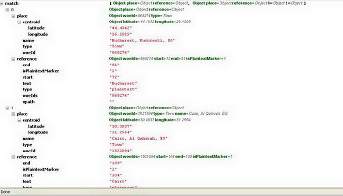
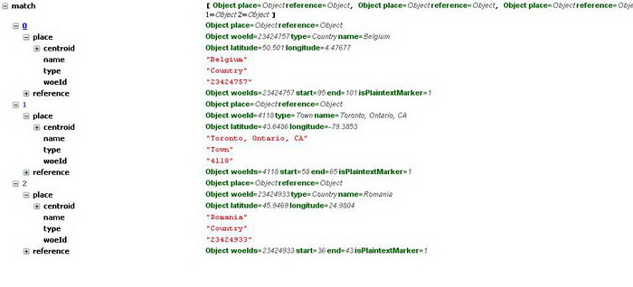
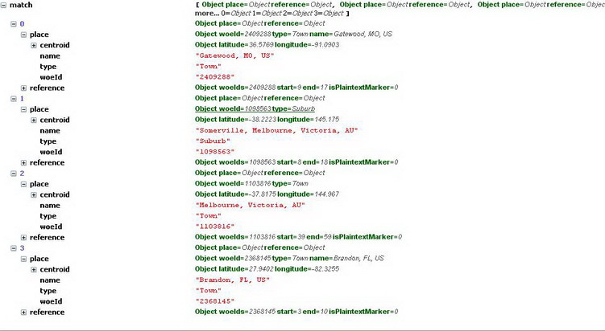

Placemaker - a location extraction web service released at Where 2.0. Using Placemaker you can find all the geographical locations in a feed or a text or a web url and you get them back as an array of places.
JS-Placemaker is a JavaScript wrapper for the Yahoo Placemaker web service using an YQL execute table to allow you to extract geo location information out of any text in various languages.
Results
How to use JSPlacemaker
The first thing to do if you want to use JSPlacemaker is to get get your own application ID for Placemaker.
Then all you need to do is include js-placemaker.js into your document and override the appID with yours.
placemaker.config.appID = '...YOUR APP ID...'; placemaker.getPlacesFromText(text,callback,local); OR placemaker.getPlacesFromUrl(url,callback,local);
text
freeform text to analiyse
callback
function to call when the locations have been found
local
local of the text ex: fr-fr,us-uk
The callback function will get an object as the return value. If there weren`t any locations found, this will have an error property otherwise it has a match return value which is an object if there was only one result or an array when there were several
Each of these objects has a name, a type, a weoid and a centroid object which contains a latitude and a longitude
For example the following call of JSPlacemaker returns in the object shown in the screenshot
placemaker.getPlacesFromText("Hello I am Adrian Statescu, Engineer Pro MAC user Web addicted I live in Bucharest but originally I from Cairo", function(o){console.log(o)},'');
placemaker.getPlacesFromText("Salutare, ma numesc Adrian sunt din Romania dar lucrez in Toronto si am calatorit in Franta si Belgia", function(o){console.log(o)},'ro-ro');

placemaker.getPlacesFromUrl("http://www.sitepoint.com/recentarticles/", function(o){console.log(o);},'');
